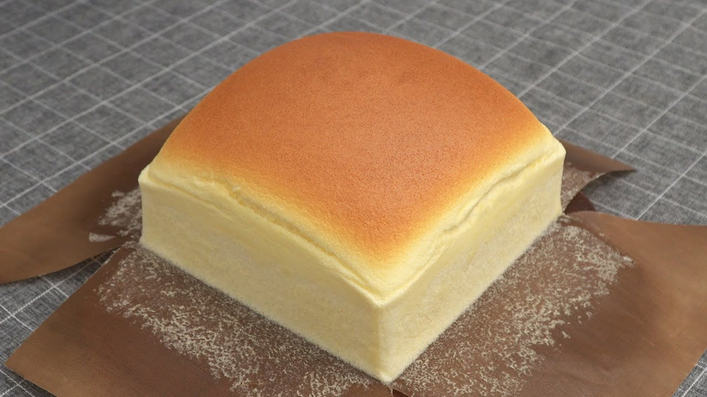

Castella Cake, simply referred to as castella, is an impossibly airy and light Japanese sponge sponge cake flavored with honey. It’s humble—never decorated, always loaf-shaped—and so simple. It uses just six ingredients: bread flour, eggs, sugar, honey. and a dash of milk with a pinch of salt.
Meal prep time : 1 hour 10 minutes
Servings : 8